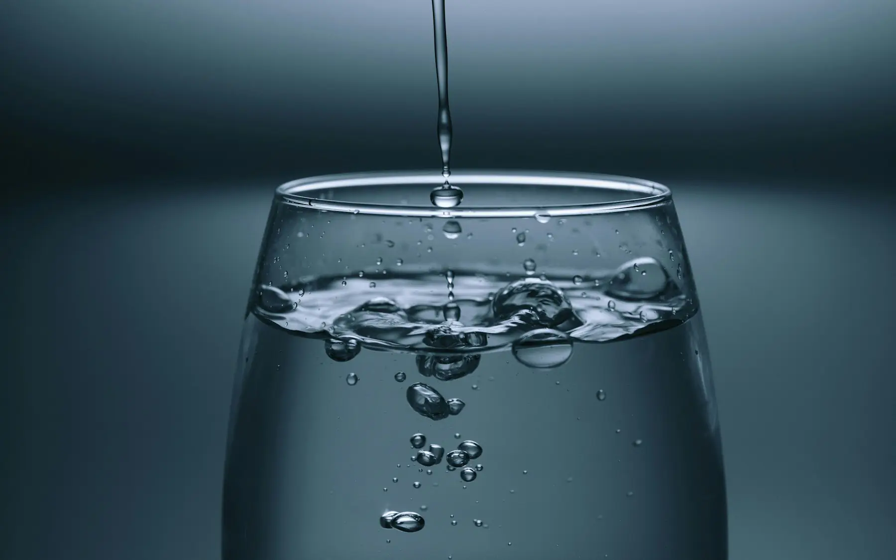

Günde gerçekten kaç litre su içmeliyiz?How much water do we really need each day?
“Günde 8 bardak” herkesin bildiği bir kural ama bilimsel bir karşılığı yok. Su ihtiyacı kişiden kişiye, hatta günden güne değişiyor.“Eight glasses a day” is a rule everyone knows, but it isn’t based on science. Water needs vary from person to person, and even from day to day.


Resmî öneriler ne diyor?
Avrupa Gıda Güvenliği Otoritesi (EFSA), yetişkinler için günlük toplam su alımını kadınlarda 2,0 litre, erkeklerde 2,5 litre olarak öneriyor. Bu miktara yiyeceklerden gelen su da dahil; yaklaşık %20–30’u sebze, meyve, çorba ve yoğurt gibi besinlerden karşılanıyor.
Yani içeceklerden gelmesi gereken miktar kadınlarda ortalama 1,5–1,6 litre, erkeklerde 2 litre civarında. Gebelikte yaklaşık 300 ml, emzirme döneminde 600–700 ml ek ihtiyaç var.
Kilo başına hesap
Pratikte kullandığımız başlangıç noktası kilo başına 30–35 ml. 65 kg bir yetişkin için bu yaklaşık 2–2,3 litre eder. Sıcak havada, yoğun egzersizde, ateşli hastalıkta ya da ishal gibi durumlarda ihtiyaç artar.
| Durum | Ek ihtiyaç (yaklaşık) |
|---|---|
| 30 dakika orta şiddette egzersiz | +300–400 ml |
| Sıcak ve nemli hava | +500 ml ve üzeri |
| Gebelik | +300 ml |
| Emzirme | +600–700 ml |
Sitedeki su ihtiyacı hesaplayıcısı bu değerleri dikkate alıyor ve gün içinde içtiğiniz bardakları işaretlemenize izin veriyor.
Çay ve kahve sayılır mı?
Evet. Ölçülü tüketilen çay ve kahvenin idrar söktürücü etkisi, içerdikleri suyu yok edecek kadar güçlü değil. Ayran, maden suyu ve çorba da sıvı alımına katkı sağlar. Şekerli içecekleri ise su ihtiyacının parçası olarak görmemek gerekir.
Yeterli içtiğimi nasıl anlarım?
- İdrar renginin açık saman sarısı olması iyi bir göstergedir.
- Susama hissi geç gelen bir sinyaldir ve yaşla birlikte zayıflar.
- Baş ağrısı, yorgunluk ve odaklanma güçlüğü hafif sıvı eksikliğinde görülebilir.
Fazla su içmek zararlı mı?
Sağlıklı bir yetişkinde nadirdir. Ancak kısa sürede çok yüksek miktarda su içmek, özellikle uzun dayanıklılık yarışlarında kandaki sodyumu tehlikeli biçimde düşürebilir (hiponatremi). Kalp veya böbrek yetmezliği nedeniyle sıvı kısıtlaması olan kişiler hekimlerinin önerdiği miktara uymalıdır.
Daha fazla içmek için küçük ipuçları
- Masanızda ve çantanızda dolu bir şişe bulundurun.
- Her öğünle birlikte büyük bir bardak su için.
- Sade sudan sıkıldıysanız limon, nane ya da salatalık dilimleri ekleyin.
- Gün içine birkaç hatırlatıcı kurun.
What do official guidelines say?
The European Food Safety Authority (EFSA) sets adequate total water intake for adults at 2.0 litres a day for women and 2.5 litres for men. That includes water from food; around 20–30% comes from vegetables, fruit, soup, yogurt and similar foods.
So the amount that needs to come from drinks is roughly 1.5–1.6 litres for women and about 2 litres for men. Pregnancy adds about 300 ml and breastfeeding 600–700 ml.
Working it out per kilo
The starting point we use in practice is 30–35 ml per kilo of body weight, which is roughly 2–2.3 litres for a 65 kg adult. Needs go up in hot weather, with intense exercise, fever or diarrhoea.
| Situation | Extra need (approx.) |
|---|---|
| 30 minutes of moderate exercise | +300–400 ml |
| Hot, humid weather | +500 ml or more |
| Pregnancy | +300 ml |
| Breastfeeding | +600–700 ml |
The water calculator on our site takes these into account and lets you tick off glasses through the day.
Do tea and coffee count?
Yes. In moderate amounts, the diuretic effect of tea and coffee isn’t strong enough to cancel out the water they contain. Ayran, sparkling water and soup also count. Sugary drinks, however, shouldn’t be treated as part of your water intake.
How can I tell if I’m drinking enough?
- Pale straw-coloured urine is a good sign.
- Thirst is a late signal, and it weakens with age.
- Headaches, tiredness and poor concentration can come with mild dehydration.
Can you drink too much?
It is rare in healthy adults. But drinking very large amounts in a short time, especially during long endurance events, can dangerously lower blood sodium (hyponatraemia). People on a fluid restriction because of heart or kidney failure should stick to the amount their doctor recommends.
Small tips for drinking more
- Keep a full bottle on your desk and in your bag.
- Have a large glass of water with every meal.
- If plain water bores you, add lemon, mint or cucumber slices.
- Set a few reminders through the day.
Kaynaklar
- EFSA Panel on Dietetic Products, Nutrition, and Allergies. Scientific Opinion on Dietary Reference Values for water. EFSA Journal. 2010;8(3):1459.
- Armstrong LE, Johnson EC. Water intake, water balance, and the elusive daily water requirement. Nutrients. 2018;10(12):1928.
- Hew-Butler T, et al. Statement of the Third International Exercise-Associated Hyponatremia Consensus Development Conference. Clin J Sport Med. 2015;25(4):303–320.